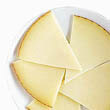
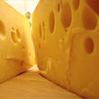
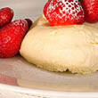
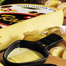
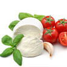

Click on a dairy product
-
 Queso de Cabrales
Queso de Cabrales
-
 Queso
Manchego -  Gorgonzola Telino
-  Mascarpone Fabioli
-
 Geitost
Geitost
-  Raclette Courdavault
-
 Camembert Pierrott
Camembert Pierrott
-  Mozzarella di Giovanni